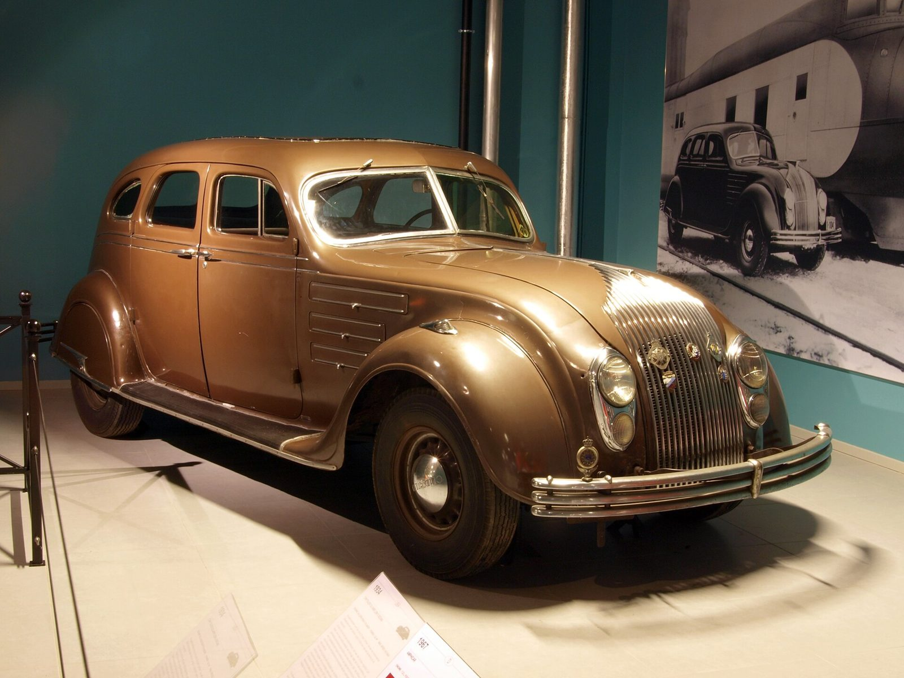

References / Product / 140
Chrysler Airflow, 1934
The first full-size American production car shaped by wind-tunnel streamlining: a rounded body, a waterfall grille, and headlamps set into the front.
- Source
- Wikipedia: Chrysler Airflow
- Creator
- Chrysler Corporation (designer Oliver Clark; engineers Carl Breer, Fred Zeder, Owen Skelton)
- Made
- 1934 (Series CU; the Airflow was built 1934–1937)
- Style
- Streamline Moderne (agent-proposed, not yet reviewed by a person)
- Moods
- Streamlined, machine-age, heavy
- Evidence
- Downloaded and inspected AlfvanBeem’s 2011 photograph of a 1934 Chrysler CU Airflow Eight sedan at the Louwman Museum, The Hague, on Wikimedia Commons, at 1920 px.
- Reviewed
- Rights
- Open license, stored. License: CC0-1.0. Rights policy

Context
Built 1934–1937, fewer than 29,600 made. Designer Oliver Clark worked with the Chrysler engineers Carl Breer, Fred Zeder, and Owen Skelton; the team ran wind-tunnel tests with the cooperation of Orville Wright. Wikipedia calls it the first full-size American production car to use streamlining as a basis for a sleeker automobile. Wikipedia.
First-year sales were 10,839; Chrysler’s conventional sedans outsold it about 2.5 to one, and most historians say buyers disliked its looks. Wikipedia.
Observed
- The body is one rounded mass: the hood curves down into the grille, and the fenders swell around the wheels in continuous curves.
- The grille is a curved “waterfall” of many thin vertical chrome bars that follows the rounded nose.
- The headlamps sit in the front, flush with the body, one pair stacked above a smaller pair on each side.
- Three horizontal chrome louvre panels with rounded ends run along the side of the hood.
- The bumper is three parallel chrome bars.
- This car is painted metallic bronze. A mural photograph behind it shows a dark Airflow beside a streamlined train.
Why it belongs
The Airflow puts the horizontal speed line on a moving object: the three-bar bumper and hood louvres are the same parallel lines that later decorate buildings and graphics. Its failure shows that streamlining sold best as a surface style, not as an engineering shape.
Borrow
Use three parallel horizontal bars with rounded ends as a bumper-like rule under a heading.
Stack short rounded bars as a louvre motif beside a panel.
Measured
Machine-extracted by tools/image-traits.py on . Full measurement.
- Mean chroma
- 0.15
- Palette
- #2a403f 13%
- #f2dfc1 13%
- #24160d 6%
- #130d0b 6%
- #20302f 5%
- #7c6757 5%
- #573823 4%
- #e4cead 4%

